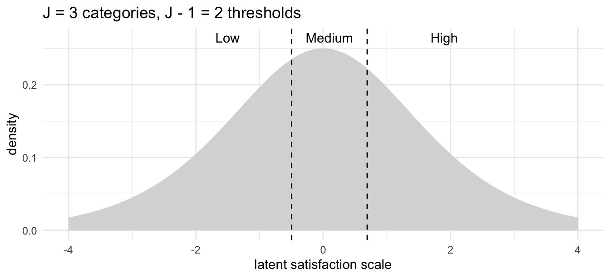

flowchart LR X beta eta thresholds Y X --> eta beta --> eta eta --> thresholds thresholds --> Y
Ordinal Regression
When the response is ordered categories
NoteAbout this page: an AI-first draft
This page was drafted first by an AI assistant (Claude Fable), and is offered as a starting point for me to revise rather than as a finished, hand-checked piece.
It exists because of a small role-reversal. The written notes here are meant to be the canonical home for the theory, with the GLM Dashboard Explainer acting as the interactive companion. But while building out the dashboard, the companion ran ahead of the course: the dashboard gained a complete ordinal-regression tutorial (and a few other model families) while JonStats had no ordinal material at all. Rather than leave that gap, the dashboard work was used to seed this page.
Treat the worked numbers below as machine-generated. The R code is real and runnable, but the prose around it deserves a careful read before you rely on it.
Where ordinal regression fits
Throughout these notes the organising idea has been the two-part view of a model (after King, Tomz & Wittenberg, 2000): a stochastic component saying what kind of random thing the response is, and a systematic component saying how the predictors push it around.
Stochastic Component
Y_i \sim f(\theta_i, \alpha)
Systematic Component
\theta_i = g(X_i, \beta)
Linear, logistic and Poisson regression are all just particular choices of f (the family) and g (the link). Ordinal regression is another choice — but it is the first one in this course where the systematic side has to stretch a little, because a single intercept is no longer enough.
The new ingredient, compared with the pipeline in Intro to GLMs, is the thresholds box between the linear predictor and the observed category. That box is the whole story of this page.
The data: ordered categories
An ordinal response is one whose categories have a natural order, but no claim to equal spacing. Survey items on a Likert scale (strongly disagree … strongly agree), pain recorded as none / mild / moderate / severe, satisfaction as low / medium / high — all ordered, none safely treated as numbers.
We’ll use MASS::housing, the canonical ordinal dataset: a frequency table of householders’ satisfaction with their housing, cross-classified by the type of housing, their sense of influence over management, and their degree of contact with other residents.
Code
library(MASS)
data(housing)
head(housing) Sat Infl Type Cont Freq
1 Low Low Tower Low 21
2 Medium Low Tower Low 21
3 High Low Tower Low 28
4 Low Medium Tower Low 34
5 Medium Medium Tower Low 22
6 High Medium Tower Low 36The response Sat is an ordered factor with three levels, Low < Medium < High.
Two tempting shortcuts are both wrong, and wrong in instructive ways:
- Treat the categories as numbers (
Low = 1,Medium = 2,High = 3) and run a linear regression. This smuggles in an assumption nobody actually believes: that the gap from low to medium equals the gap from medium to high. It will also happily predict a satisfaction of2.7, which means nothing. - Treat the categories as unordered and run a multinomial model. This is safe but wasteful: it throws away the ordering, estimating a separate set of coefficients for every category and so spending far more parameters than the problem needs.
Ordinal regression threads between the two: it respects the ordering without pretending the gaps are equal.
A latent variable, cut into categories
The standard way to make sense of “ordered but not equally spaced” is to imagine a continuous latent variable sitting behind the observed category — a quantity of “satisfaction” that really is continuous, which we only ever see coarsened into low, medium or high by where it falls relative to a set of thresholds (or cut-points).
Concretely, write the latent quantity for individual i as a linear predictor plus noise, \eta_i = X_i\beta, and place J-1 thresholds \alpha_1 < \alpha_2 < \dots < \alpha_{J-1} along its scale. We observe category j when the latent value lands between \alpha_{j-1} and \alpha_j. With a logistic noise term this gives the cumulative logit (or proportional odds) model:
P(Y_i \le j) = \operatorname{logit}^{-1}(\alpha_j - X_i\beta), \qquad j = 1, \dots, J-1,
with the conventions P(Y_i \le 0) = 0 and P(Y_i \le J) = 1. The probability of an individual category is then the difference of two neighbouring cumulative curves, P(Y_i = j) = P(Y_i \le j) - P(Y_i \le j-1).
The crucial structural fact — the thing that makes ordinal regression ordinal — is that there are J-1 thresholds for J categories, and the same slope vector \beta acts at every threshold. The predictors move the whole latent distribution left or right; the thresholds stay put and decide how that movement gets carved into categories.
TipThe picture, hand-drawn
I’ve drawn this latent-variable-with-thresholds construction out by hand before, in a slightly different setting: Factor analysis with ordinal variables, in the hand-drawn statistics series on the blog. The diagram on page four of that post — a continuous scale chopped into ordinal levels by a row of thresholds, with the rule “if there are T levels there are T-1 thresholds” — is exactly the construction above.
One honest caveat, because the two settings are not the same model. That post is about measurement: recovering a latent factor from a battery of ordinal indicators (the thresholds there are estimated per item, and there are no predictors). This page is about regression: a single ordinal outcome whose latent scale is driven by predictors X\beta, with one shared set of thresholds. Same atom — which slice of an unequally-spaced latent continuum do you fall into? — put to two different uses. If you want the static, measurement-flavoured intuition, read the drawing; if you want the moving, predictor-driven version, read on (or open the interactive demo).
Fitting it in R
MASS::polr (“proportional odds logistic regression”) fits the cumulative logit model. The housing data come pre-tabulated, so we pass the cell counts as weights.
Code
m <- polr(Sat ~ Infl + Type + Cont, weights = Freq, data = housing, Hess = TRUE)
summary(m)Call:
polr(formula = Sat ~ Infl + Type + Cont, data = housing, weights = Freq,
Hess = TRUE)
Coefficients:
Value Std. Error t value
InflMedium 0.5664 0.10465 5.412
InflHigh 1.2888 0.12716 10.136
TypeApartment -0.5724 0.11924 -4.800
TypeAtrium -0.3662 0.15517 -2.360
TypeTerrace -1.0910 0.15149 -7.202
ContHigh 0.3603 0.09554 3.771
Intercepts:
Value Std. Error t value
Low|Medium -0.4961 0.1248 -3.9739
Medium|High 0.6907 0.1255 5.5049
Residual Deviance: 3479.149
AIC: 3495.149 The output has two blocks, and the split matters. The Coefficients are the slopes \beta — one per predictor, not one per threshold. The Intercepts are the thresholds \alpha_1, \alpha_2 — here labelled Low|Medium and Medium|High, the two cut-points between three categories. There is no single “intercept”: its job has been taken over by the J-1 thresholds.
We can show the fitted thresholds on the latent scale, which is the rendered, real-data version of the hand-drawn picture above:
Code
library(ggplot2)
thr <- as.numeric(m$zeta) # fitted thresholds (cut-points)
d <- data.frame(x = seq(-4, 4, length.out = 400))
d$density <- dlogis(d$x)
ggplot(d, aes(x, density)) +
geom_area(fill = "grey85") +
geom_vline(xintercept = thr, linetype = "dashed") +
annotate("text", x = c(-1.5, 0.1, 1.9), y = 0.265,
label = c("Low", "Medium", "High")) +
labs(
x = "latent satisfaction scale",
y = "density",
title = "J = 3 categories, J - 1 = 2 thresholds"
) +
theme_minimal()
Move a household toward higher influence or away from terraced housing and you slide the whole curve rightward under those fixed dashed lines, shifting probability mass from Low toward High.
Why only betas look at betas (again)
A recurring theme of these notes is that the raw \beta coefficients are usually not the quantity you want to read off and interpret directly. Ordinal regression is a clean case in point: a coefficient here is neither a change in the response (the response is a category, not a number) nor a probability. On the logit scale it is a log odds ratio, so the interpretable quantity is its exponential:
Code
round(exp(coef(m)), 3) InflMedium InflHigh TypeApartment TypeAtrium TypeTerrace
1.762 3.628 0.564 0.693 0.336
ContHigh
1.434 Because the model is proportional odds, each of these has a single, threshold-independent reading: \exp(\beta_k) is the multiplicative effect on the odds of being in a higher category rather than a lower one, for a one-unit change in x_k — and that same factor applies at every cut-point. So high influence over management multiplies the odds of greater satisfaction by about 3.6, while living in a terrace (versus a tower block) multiplies them by about 0.34.
That “one push across all thresholds” is precisely the assumption that lets ordinal regression be so economical — and the thing you should be suspicious of (see below).
If you want something genuinely interpretable on the scale people care about, predict probabilities for a concrete profile rather than staring at coefficients:
Code
newd <- data.frame(Infl = "Medium", Type = "Tower", Cont = "High")
round(predict(m, newd, type = "probs"), 3) Low Medium High
0.194 0.247 0.559 A medium-influence tower-block household with high resident contact is predicted most likely to report high satisfaction — but with real probability mass in all three categories, which is exactly the kind of honest, hedged statement a categorical outcome deserves.
The proportional-odds assumption
The economy of the model — one slope vector instead of one per threshold — rests entirely on the proportional-odds assumption: that a predictor’s effect is the same at every cut-point. That is a real, testable restriction, and it is not always met.
A few practical notes:
- It can be checked formally (for example a Brant test, or by comparing against a model that lets the slopes vary across thresholds).
- The
ordinalpackage’sclm()is a more flexible modern alternative topolr, and supports partial proportional odds, where you relax the assumption for just the predictors that need it. - A latent variable made of normal rather than logistic noise gives the ordered probit model — the same threshold construction, a different cumulative curve, and usually near-identical conclusions. This is the same logit-versus-probit choice that appears for binary outcomes in Intro to GLMs.
Try it interactively
TipTry it interactively
The companion GLM Dashboard Explainer has a full ordinal-regression walkthrough — choosing the response and predictors, picking the cumulative-logit link, and an interactive version of the threshold picture above where you can drag the latent distribution under the cut-points and watch the category probabilities change: Tutorial 7: Ordered Categories.
Further reading and connections
- The hand-drawn origin. Factor analysis with ordinal variables gives the latent-variable-and-thresholds intuition in pen and paper, and its sequel How factor analysis is used in testing carries the same idea into how standardised aptitude and knowledge tests are built — the bridge from ordinal models toward item-response theory.
- The framework. Intro to GLMs sets up the stochastic/systematic split that this page extends, and the why-only-betas argument that the odds-ratio interpretation above is an instance of.
- The interactive companion. Tutorials for the other model families — Poisson, negative binomial, gamma, beta and zero-inflated counts — live on the GLM Dashboard Explainer, several of which are not yet written up here.